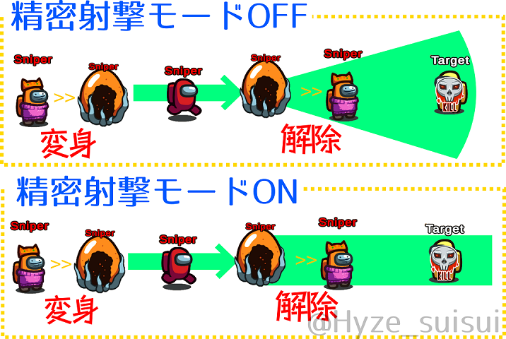
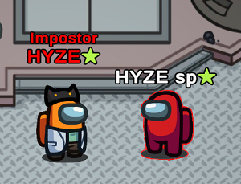

このページでは、アモアスの追加役職をMODごとに説明します。
TownOfHost
役職名の前にがついている役職はv2.0のreadmeに記載を確認している役職です(説明は暫定的なもの。追加が確定しているわけではありません)。
インポスター陣営
-
マッドメイト(Madmate)
マッドメイトからはインポスターが誰なのかはわからず、インポスターからもマッドメイトが誰なのかはわからない。ベントに入れる。停電やコミュサボを直せない。
-
ヴァンパイア(Vampire)
キルボタンを押してから一定時間経ってキルが発生する。キルをしたときのテレポートは発生しない。キルボタンを押してから設定された時間が経つまでに会議が始まるとその瞬間にキルが発生する。ベイトをキルした場合のみ通常のキルとなり、強制的に通報させられる。
-
マフィア(Mafia)
初期状態でベントやサボタージュ、変身は可能だが、キルをすることはできない。マフィアではないインポスターが全員死亡すると、マフィアもキルができるようになる。キルができない状態でもキルボタンはあるが、キルをすることはできない。キルが可能になった後でも変身はできる。
-
バウンティハンター(BountyHunter)
v1.4: 表示されたターゲットをキルした場合、次のキルクールが半分になる。ターゲットではないプレイヤーをキルした場合も、次のキルクールはそのまま維持される。
v2.0: 表示されたターゲットをキルした場合、次のキルクールが短くなる。ターゲットではないプレイヤーをキルした場合は、キルクールが伸びてしまう。また、設定でキルクールを 2.5 秒に設定する必要がある。ターゲットは一定時間ごとに変更される。 -
魔女(Witch)
キルボタンを押すごとにキルモードとスペル(魔術)モードが入れ替わり、スペルモードの時にキルボタンを押すと対象に魔術をかけることができる。魔術をかけられたプレイヤーには会議で名前に十字架マークが付き、その会議で魔女を追放できなければ死亡してしまう。
-
マッドガーディアン(MadGuardian)
狂人の一種。マッドガーディアンからはインポスターが誰なのかはわからず、インポスターからもマッドガーディアンが誰なのかはわからない。自身のタスクを全て完了させるとキルされなくなる。キルやサボタージュはできず、ベントに入ることもできない。
-
シリアルキラー(SerialKiller)
キルクールが短いインポスター。その代わり、時間が来るまでにキルをしないと自爆してしまう。
-
シェイプマスター(ShapeMaster)
変身後のクールダウンを無視し、再度変身することができるシェイプシフター。
-
ウォーロック(Warlock)
ウォーロックが変身をする前にキルをすると、その相手に呪いがかかる。その状態で変身を行うと、呪った人に一番近い人が死ぬ。呪いキルの成功または会議を挟むと呪いはリセットされる。
-
マッドスニッチ(MadSnitch)/狂信者
狂人の一種。マッドスニッチからはインポスターが誰なのかはわからず、インポスターからもマッドスニッチが誰なのかはわからない。自身のタスクを一定数完了させると自分視点でインポスターの名前が赤色に変化する。ベントには入れない。
-
パペッティア(Puppeteer)
キルした対象に、対象が次に近づいたクルーをキルさせる。対象がキルした相手がキルされた瞬間に発動する能力を持っていた場合(ベイトなど？)、対象にその効果が反映される。普通のキルを行うことはできない。
-
花火職人(FireWorks)
変身することで最大3個の花火を設置できる。すべての花火を設置し終え、最後のインポスターとなった時に変身すると、花火が一斉に起爆する。花火を設置し始めてから爆破するまでキルできない。自身が爆破に巻き込まれても全滅させることができた場合は勝利となる。
-
スナイパー(Sniper)
遠距離射撃ができる。変身した地点から解除した地点への延長線上にいる対象をキルする。射線上のクルーには射撃音(守護天使のエフェクト？)が聞こえる。弾丸を打ち切るまで通常キルはできない。
-
タイムシーフ(TimeThief)
プレイヤーをキルすると会議時間が減少する。タイムシーフが死亡すると失われた分の会議時間が戻ってくる。
-
メアー(Mare)
停電中しかキルができないが、キルクールが半分になる。停電中のみ移動速度も上昇するが、自分の名前が赤く表示される。

スナイパーの射撃(クリックで拡大)
クルー陣営
-
ベイト(Bait)
キルされたときに、自分をキルしたプレイヤーに強制的に自分の死体を通報させる。
-
メイヤー(Mayor)
一度に複数票を入れることができる。
-
サボタージュマスター(SabotageMaster)
サボタージュを早く直すことができる。リアクター、O2、MIRAHQのコミュサボは片方を修理すれば両方直る。停電は1箇所のレバーに触れると全て直る。PolusやAirshipのドアを開けるとその部屋の全てのドアが開く(設定による)。
-
シェリフ(Sheriff)
人外をキルすることができる。しかし、クルーメイトをキルした場合、自分が死亡してしまう。仕様上タスクがない。
-
スニッチ(Snitch)
タスクを完了させると、自分視点だけでインポスターの名前が赤く表示されるようになる。スニッチのタスクが少なくなると、インポスターは自分の名前に黄色い星が表示されることで通知を受け取り、さらにインポスター視点でスニッチの名前の横にも同じ星マークが表示されるようになってしまう。
-
ライター(Lighter)
タスクを完了させると自分の視界が広がり、停電の影響を受けなくなる。
-
スピードブースター(SpeedBooster)
タスクを完了させると、生存しているランダムなプレイヤーの速度を上げる。
-
トラッパー(Trapper)
キルされると、キルした人を一時的に移動不可にする。
-
ディクテーター(Dictator)
会議中に誰かに投票をすると、会議を強制終了させて投票先を追放する。投票したタイミングでディクテーターは死亡する。
-
ドクター(Doctor)
プレイヤーの死因を知ることができ、遠隔でバイタルをみることができる。

スニッチ通知を受け取ったインポスター視点(v1.4で確認)
両方に出現
第三陣営
-
ジェスター(Jester)
投票で追放されたときに単独勝利する。追放されずにゲームが終了するか、キルされると敗北となる。
-
テロリスト(Terrorist)
自身のタスクを全て完了させた状態で死亡したときに単独勝利する。タスクを完了させずに死亡したり、死亡しないまま試合が終了すると敗北となる。
-
オポチュニスト(Opportunist)
ゲーム終了時に生き残っていれば追加勝利となる(横取りしない)。タスクはない。
-
アーソニスト(Arsonist)
キルボタンを押して一定時間近くにいると相手にオイルが塗れる。生存者全員にオイルを塗ると単独勝利する。
-
シュレディンガーの猫(SchrodingerCat)
デフォルトでは勝利条件を持たず、条件を満たすと初めて勝利条件を持つ。
- インポスターにキルされた →キルを防いでインポスター陣営となる
- シェリフにキルされた →キルを防いでクルー陣営となる
- 第三陣営にキルされた →キルを防いで第三陣営となる
- 追放された →役職が変化せず、そのまま勝利条件が変わらず死亡する
- ウォーロックの能力でキルされた →そのまま勝利条件が変わらず死亡する
- 自殺系キル(ヴァンパイア除く)でキルされた →そのまま勝利条件が変わらず死亡する
-
エゴイスト(Egoist)
インポスターはエゴイストを認識している。エゴイストもインポスターを認識している。インポスターとエゴイストは切りあうことができない。他のインポスターが全滅した状態で、かつインポスターの勝利条件を達成した場合に勝利する。エゴイストが勝利するとインポスターは敗北となる。死亡してしまったり、他のインポスターが残っている状態でインポスター勝利をしてしまった場合、エゴイストは敗北となる。
-
恋人(Lovers)
クルーのタスク勝利以外で恋人が2人とも生き残っている状態で試合が終了すると勝利。全プレイヤーの中から、本来の役職と重複して2人配役され、互いの名前の後ろにハートマークが付いて見える。クルー陣営のタスクを持つプレイヤーが恋人になった場合、タスクがなくなる。片方が死亡したらもう片方も死亡する。
役職重複例(クリックで表示):
- テロリスト+恋人 - タスクを持つ。通常のテロリスト勝利も可能。
- マッドスニッチ(狂信者)+恋人 - 通常通り、タスクを完了させるとインポスターがわかる。
- スニッチ+恋人 - タスクを持たず、インポスターがわからない。
- シェリフ+恋人 - 通常通り人外を切れる。
- オポチュニスト+恋人 - 生き残れば勝利。
- ジェスター+恋人 - 自分が追放されればジェスターとして勝利。
- ベイト+恋人 - 恋人の相手がキルされた場合、通常通り後追い死亡するが、ベイト効果の通報は恋人の相手が行う。
-
エクスキューショナー(Executioner)
ターゲットを追放すると単独勝利。ターゲットには名前にダイヤマークが付いて見える。ターゲットがキルされた場合は設定した役職に変化する。ターゲットがジェスターだった場合は2人で一緒に勝利する。
TheOtherRolesGM
ここでは主なもののみ説明します。載っていない役職はこちらを探すと説明があります。
インポスター陣営
-
バウンティハンター(Bounty Hunter)
一定時間ごとにターゲットが設定され、そのターゲットをキルするとその後のキルクールが非常に短くなる。
-
モーフィング(Morphling)
近くにいる人をスキャンし、その対象に変身することができる。
-
トリックスター(Trickster)
びっくり箱を好きな場所に3つ置くことができる。3つ置き切ると、箱は全員から見えるようになり、互いに接続されたベントとして使用できるようになる。さらに、3つの箱を置き終えた後のトリックスターは強制的に停電を起こすことができるようになる。
-
ヴァンパイア(Vampire)
時間差キルができる。ヴァンパイアが湧く可能性がある場合、すべてのプレイヤーは1つニンニクを置くことができ、置かれたニンニクの周辺では通常キルしかできなくなる。
-
ウォーロック(Warlock)
他のプレイヤーを呪うことができ、呪ったプレイヤーの近くにいる人をキルできる。呪殺を行ったウォーロックは一定時間硬直してしまう。通常キルも行うことができ、呪殺と通常キルはクールタイムが共有される。
-
魔女(Witch)
他のプレイヤーを呪うことができ、呪ったプレイヤーは次の会議の後に死亡する。会議中、呪われたプレイヤーには全員が確認できる印が付く。オプション設定で、魔女が死亡したり、ゲッサーに撃たれたり、会議で吊られた場合に呪われたプレイヤーが死亡するかどうかを選べる。
-
ニンジャ(Ninja)
透明化できる。透明化状態では、移動速度が上昇する。透明化を使用すると、ペナルティとしてキルクールタイムが発生する。
-
シリアルキラー(Serial Killer)
キルクールが短いが、一度キルを行った後、設定した時間が経過するまでにキルを行えなかった場合、自分が死亡してしまう。
-
ネコカボチャ(Neko-Kabocha)
シェリフやジャッカルなどに殺害された場合、自分を殺害したシェリフやジャッカルなどを道連れにする。
-
マフィア(Mafia) - 三人組で構成される特殊なインポスター
-
ゴッドファーザー(Godfather)
普通のインポスターのようにキルができる。
-
マフィオソ(Mafioso)
はじめはキルができないが、ゴッドファーザーが死亡するとキル能力を獲得する。
-
ジャニター(Janitor)
キル能力はないが、死体を掃除して消すことができる。
-
ゴッドファーザー(Godfather)
-
マッドメイト(Madmate)
クルーロールとして設定が必要。インポスターのために行動するクルーメイト。停電(設定によってはコミュサボも)を直せない。
クルー陣営
-
シェリフ(Sheriff)
人外をキルできる。キルした対象にメディックのシールドが張られていた場合、誰も死亡しない。成人前のイビルミニは撃つことができず、自爆する。
-
メイヤー(Mayor)
他のプレイヤーよりも多い票数を持つ。
-
ベイト(Bait)
キルされると強制的にセルフレポートさせる。ベントの中に人がいるかどうかがわかる。
-
ライター(Lighter)
ライトをオンにすると、自分の視界が広がる。
-
スニッチ(Snitch)
タスクを全て完了すると、インポスターを示す矢印が見えるようになる。しかし、スニッチのタスク残量が少なくなると、同じようにインポスターからスニッチを示す矢印が見えるようになってしまう。
-
エンジニア(Engineer)
ベントを使用できる。生きている間、設定した回数だけサボタージュを遠隔で一発修理できる。エンジニアがベントに入っている間、インポスターとジャッカルには全てのベントが青く見える。
-
メディック(Medic)
ゲームごとに1人のプレイヤーにシールドを付与でき、メディックが死亡するとシールドも消える。ラバーズの後追いはシールドを貫通する。また、自身がレポートした死体がどのくらい前に死んだか知ることができる。
-
占い師(Fortune Teller)
はじめは自身が占い師である自覚はなく、クルーメイトとして表示される。設定したタスクを完了すると、自身が占い師であることを自覚し、能力を得る。能力を得ると会議ボタンが押せなくなる。占いは、一定時間近くにいたプレイヤーか、既に死亡したプレイヤーに対して行える。占いを行うと、インポスターに占い師を示す矢印が表示されてしまう。背徳者を占うと、背徳者は通知を受け取る。妖狐を占うと呪殺できる。
-
ミーディアム(Medium)
死体が発見された会議の次のターンのみ、その死体が死亡した場所で、死亡したプレイヤーの魂に質問を行える。質問の答えは、次の会議でチャット欄に送信される。質問は以下からランダムに選ばれる。
- あなたの役職は？
- あなたを殺害したプレイヤーの体の色は？(明るい/暗い)
- あなたはいつ死んだ？
- あなたを殺害したプレイヤーの役職は？
-
タイムマスター(Time Master)
タイムシールドを張っている間にキルされると、キルは発生せず、全プレイヤーの時間を巻き戻す。
-
スパイ(Spy)
インポスターからは、スパイはインポスターであるように見え、本物のインポスターと見分けがつかない。設定によって、インポスターはスパイをキルできないか、もしくはスパイも本物のインポスターもキルできる。
両方に出現
-
ミニ(Mini)
全プレイヤーに小さいキャラクターで表示される。時間経過で成長し、成人すると他のプレイヤーと同じような見た目になる。シェリフが成人前のミニを撃つと、イビルかナイスかに関係なく自爆する。
-
イビルミニ(Evil Mini): インポスターのミニ
成人するまでは、通常インポスターの2倍のキルクールを持つ。成人すると、キルクールが逆に通常の2/3になる。
-
ナイスミニ(Nice Mini): クルーメイトのミニ
成人前に追放されると、その時点で全員が負ける。
-
イビルミニ(Evil Mini): インポスターのミニ
-
ゲッサー(Guesser)
会議中に役職を推測することで、その場で対象を殺害できる。推測を間違えた場合、その場で自爆する。陣営だけでなく正確な役職まで当てなければならない。
- イビルゲッサー(Evil Guesser): インポスターのゲッサー
- ナイスゲッサー(Nice Guesser): クルーメイトのゲッサー
-
スワッパー(Swapper)
会議中に、指定した2人に対して投じられた票を入れ替えることができる。
- イビルスワッパー(Evil Swapper): インポスターのスワッパー
- ナイススワッパー(Nice Swapper): クルーメイトのスワッパー
第三陣営
-
ジャッカル(Jackal)
キルができる第三陣営。インポスターもしくはクルーメイトが全滅しても、ジャッカルが残っていた場合ゲームは続行される。設定によって、ジャッカルはサイドキックを作成できる。インポスターがおらず、かつサイドキックも含めたジャッカル陣営がクルーメイトと同数になると勝利。
-
サイドキック(Sidekick)
ジャッカルが死亡するとジャッカルに昇格する。設定によっては、昇格後さらにサイドキックを作れる。
-
サイドキック(Sidekick)
-
ラバーズ(Lovers)
2人組の第三陣営。設定によっては他の役職に重複して割り当てられる(インポスターラバーズ&シェリフラバーズのような組み合わせもあり得るが、相手の役職はわからない)。どちらかが死亡した場合、もう片方も後追いで死亡する。ゲーム終了時に2人とも生存していた場合勝利となる。
-
ジェスター(Jester)
会議で追放されるとその時点で単独勝利する。
-
ヴァルチャー(Vulture)
設定された数の死体を食べると勝利する。
-
妖狐(Fox)
他の第三陣営の単独勝利の場合を除き、タスクを完了し、最後まで生存していた場合単独勝利する。自身をキルできるプレイヤー(インポスター、ジャッカル、シェリフ)の位置が矢印で表示される。透明化でき、透明化中はキルされない。サボタージュを直せない。設定により、自身をキルできるプレイヤーを除く他のプレイヤーを背徳者にすることができる。
-
背徳者(Immoralist)
妖狐が死亡すると自身も死亡する。妖狐の居場所がわかる。自殺ボタンで自殺できる。キルが起きると画面にエフェクトが表示される。
-
背徳者(Immoralist)
-
オポチュニスト(Opportunist)
ゲーム終了時に生きていた場合に追加勝利となる。
-
ペスト医師(Plague Doctor)
自身の生死にかかわらず、生存している全てのプレイヤーに感染させることで勝利する。1人のプレイヤーを感染源にすることで、そのプレイヤーの近くにいるプレイヤーに感染が広がる。さらに、ペスト医師を殺害したプレイヤーは感染してしまう。
-
アーソニスト(Arsonist)
油ボタンを押しながら他のプレイヤーの近くにとどまることで、対象に油を塗ることができる。生存している全てのプレイヤーに油を塗ると、発火させることができ、単独勝利する。